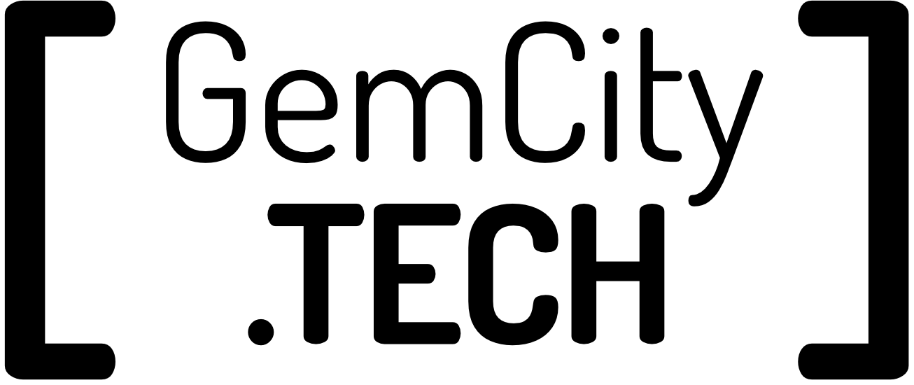

Welcome
Opening Remarks
GemCity.TECH
GemCity.TECH
GemCity TECH’s mission is to grow the Dayton industry and the Gem City community by providing a centralized destination for technical training, workshops and providing a forum for collaborating. detail
We have a variety of special interest groups representing different technical disciplines. We would like to expand and support the technical community and are always open to discussion about new opportunities.
- Meetup
- Discord
GemCity TECH
Currently, supports several special interest groups from a variety of technical disciplines.
- Software Engineering
- Dayton Dynamic Languages
- Gem City Games Developments
- New to Tech
- Frameworks
- Machine Learning / Artificial Intelligence (ML/AI)
- Code for Dayton
- Cognitive Think Tank
- Meetup
- Discord
Big Thanks to our Sponsors
GemCity TECH

The Hub

Technology First

- GemCity TECH: GemCity.Tech
- The Innovation Hub: thehubdayton.com
- Technology First: www.technologyfirst.org
Code of Conduct
We expect everyone in our space to abide by this Code of Conduct. This includes event attendees, community organizers, sponsors, guests, and board members. Violation of this Code of Conduct could result in being removed from the GemCity TECH community and no longer having access to the associated benefits. If you witness a violation of our Code of Conduct, please notify us. Always feel empowered to say something and please escalate any concerns immediately to someone on the staff or leadership team or email help@gemcity.tech.
Welcome Everyone
Our community members are our family. Come hang out with us to learn and collaborate on a wide range of technology topics. We do not tolerate discrimination of any kind, especially on the basis of race, ethnicity, gender, religion, sexual orientation, national origin, disability, gender identity, socioeconomic status, or citizenship status. We are committed to creating a non-hostile meeting and event space for all.
Treat Others & The Space With Respect
Respect and allow everyone to express their opinions, concerns, and needs. Listen with the intention to understand. Respect the privacy of everyone in our community.
Please pick up after yourself. Treat communal spaces with respect. If you move something, put it back. Leave the space as you found it or better.
Harassment Is Not Tolerated
We do not tolerate harassment of any kind. Unwanted texting, calling, emailing, following, stalking, badgering, intimidating, or threatening will result in being removed from the GemCity TECH community.
Harassment also includes sexual harassment in any form such as teasing, jokes, innuendos, images, gestures, touching, grabbing, or giving gifts of a sexual or unwanted nature.
If someone tries to move on from the conversation, let them go. If someone explicitly tells you to leave them alone, then leave them alone. If you are unsure if your behavior is inappropriate, don’t do it. Always err on the side of making a comfortable environment based on the other person’s standards, not your own.
Professional Environment
GemCity TECH is a community of event attendees, community organizers, sponsors, guests, and board members. This is a professional environment and should be treated as such. These are your peers, so please treat each other like peers. Be courteous, kind, and respectful at all times.
Diversity Encouraged & Celebrated
GemCity TECH is committed to building a diverse and difference(){ cwithout expectation of anything in return. Help other members of the community by making introductions, sharing your experience, or just listening.
Abide By The Law
Do not participate in any illegal activities.
We do not allow the use of illegal drugs, illegal hacking, and anything that would put our community in jeopardy.
Smoking, vaping, or chewing is not allowed in our space.
Do not take other people’s physical property. Do not take other people’s intellectual property…but, we encourage you to contribute to open source.
The GemCity TECH Code of Conduct is a living document managed by our community. If you have any suggestions, please feel free to contact us.
Other
Bathrooms
Bathrooms are located in the building
Nearest exit
How to leave building after hours
- Press the green button
- Walk to the outside doors and turn left.
- Press the door opener
- Press the green button
Upcoming Events
- GemCity TECH Events:
- https://www.meetup.com/gem-city-tech/events/calendar/
- Technology First Events (Dayton):
- https://technologyfirst.org/Events
- Codemash (Annual Conference - January):
- https://codemash.org/
- Stir Trek (Annual Conference - May):
- https://stirtrek.com/
- Momentum Developer Conference (Annual Conference - October):
- https://momentumdevcon.com/
Now, for our first speaker…

GemCity.TECH